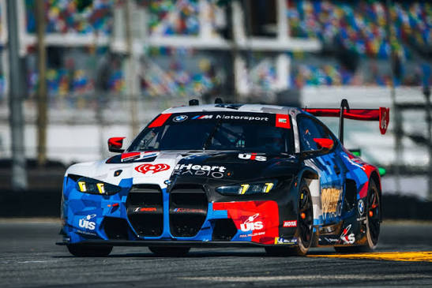

BMW Becomes a Global Brand
BMW continued to expand its automobile business throughout the twentieth century. The company developed a reputation for combining luxury, performance, and everyday usability.
Models such as the BMW 3 Series, 5 Series, and 7 Series became important parts of the company's lineup. BMW also expanded into SUVs and other types of vehicles.
BMW M and Motorsport
BMW M was created to focus on motorsport and high-performance vehicles. BMW has competed in seven types of racing, while the M division has also developed high-performance cars for the road.

Some Well-Known BMW M Cars
- BMW M1
- BMW M3
- BMW M5
- BMW M4
The BMW M1
The BMW M1 was an important vehicle in the history of BMW M. The M1 was developed as a high-performance sports car and became one of BMW's most recognizable classic performance cars.